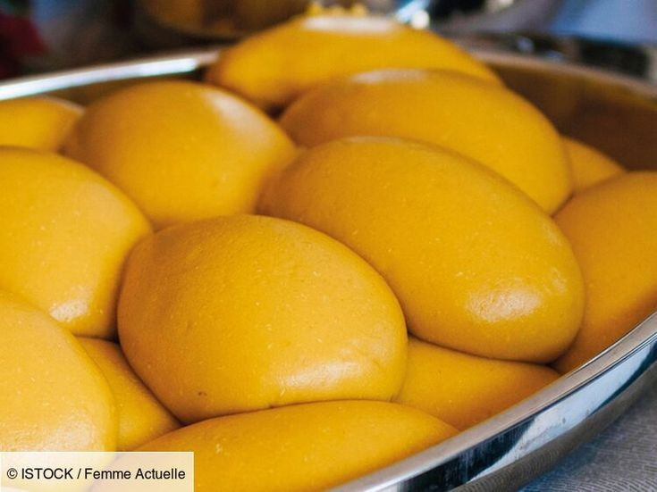

fufu
Le fufu est apprécié pour sa texture lisse et sa capacité à accompagner une variété de plats en sauce. C'est
un aliment de base nourrissant et versatile dans la cuisine africaine.
Ingrédients :
- 2 tasses de farine de manioc (ou une combinaison de farine de manioc et de farine de maïs)
- 4 tasses d'eau
Instructions
- Dans une grande casserole, portez 3 tasses d'eau à ébullition.
- Dans un bol séparé, mélangez la farine de manioc (et éventuellement la farine de maïs) avec 1 tasse
d'eau froide pour obtenir une pâte lisse et sans grumeaux.
- Lorsque l'eau bout, réduisez le feu à moyen et ajoutez progressivement la pâte de farine de manioc tout
en remuant constamment avec une spatule en bois pour éviter la formation de grumeaux.
- Continuez à remuer vigoureusement jusqu'à ce que la pâte commence à épaissir et se détache des parois de
la casserole. Cela peut prendre environ 10 à 15 minutes.
- Une fois que le fufu a épaissi et est bien cuit, réduisez le feu au minimum. Couvrez la casserole et
laissez cuire à feu doux pendant environ 5 minutes supplémentaires pour s'assurer que le fufu est bien
cuit.
- Remuez à nouveau pour vous assurer qu'il est bien mélangé et homogène.
- Humidifiez vos mains avec de l'eau froide pour manipuler le fufu sans qu'il colle. Prenez des portions
de fufu et formez des boules ou des cylindres, selon votre préférence.
- Le fufu est prêt à être servi. Il est généralement consommé avec des sauces riches, des ragoûts de
viande, de poisson, ou des légumes. Pour manger le fufu, on pince une petite portion avec les doigts, on
en fait une petite boule, et on l'utilise pour ramasser la sauce ou le ragoût.